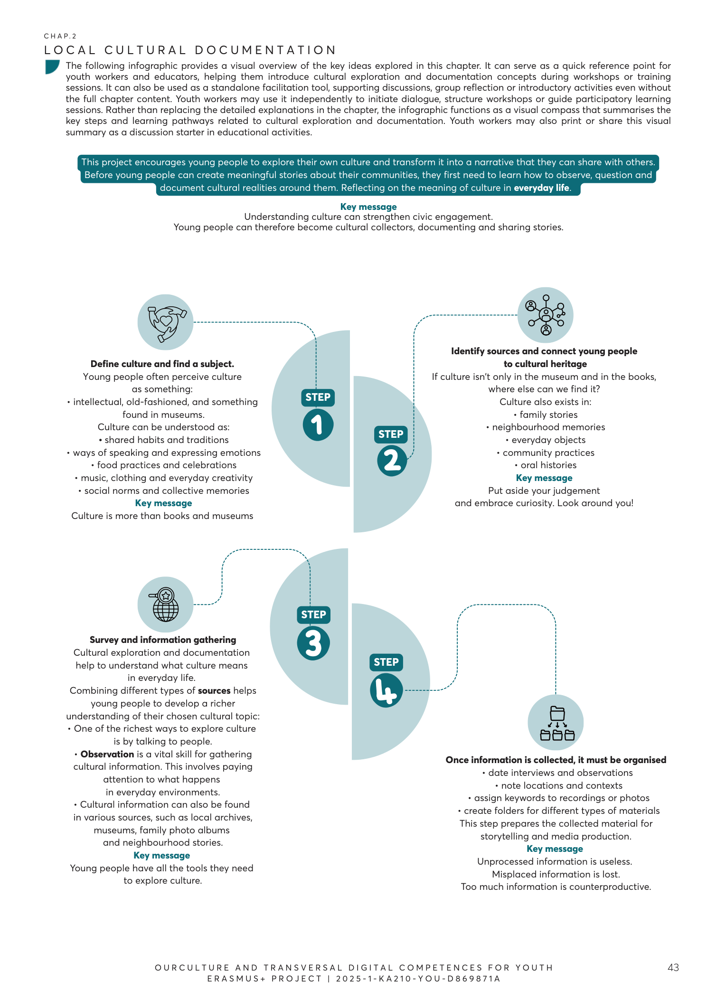

I N F O G R A P H I C S U M M A R Y

Visual summary of this chapter — click to enlarge or download.
Download infographic (PDF)Introduction

After developing critical digital and media literacy skills in Chapter 1, the next step is to explore the cultural environments in which young people live. Before young people can create meaningful stories about their communities, they first need to learn how to observe, question and document cultural realities around them.
This chapter therefore focuses on cultural exploration and documentation. It provides youth workers with practical tools to help young people:
- understand what culture means in everyday life
- identify cultural topics worth exploring
- collect reliable cultural information from different sources
- learn basic investigation methods inspired by ethnography and oral history
The activities encourage curiosity, observation and dialogue with local communities. Through these processes, young people become active explorers of their own cultural environment.
DigComp 3.0 connection
This chapter mainly supports Information search, evaluation and management, helping young people collect, assess and organise cultural information from different sources.

Learning objectives
By the end of this chapter, youth workers will be able to:
- help young people reflect on the meaning of culture in everyday life
- guide young participants in identifying cultural topics to explore
- support young people in identifying different types of sources
- facilitate cultural investigation through interviews, observation and documentation
- prepare young participants to transform collected material into stories (Chapter 3).
Sections
- Section 1 | Why local culture matters?
- Section 2 | Cultural documentation methods
- Section 3 | Practical tools & activities
- Section 4 | Case studies & best practices
Section 1 · Why local culture matters?
Introduction to the theme of culture
Understanding culture in everyday life
When young people hear the word culture, they often think first about museums, monuments or famous works of art. However, culture is much broader. It includes the ways people think, act, communicate and live together.
Culture can be understood as:
- shared habits and traditions
- ways of speaking and expressing emotions
- food practices and celebrations
- music, clothing and everyday creativity
- social norms and collective memories
In sociology and anthropology, culture is generally understood as the set of practices, values and meanings shared by a group of people and transmitted through social life. This perspective emphasises that culture is learned, shared and evolving. Young people are therefore not only recipients of culture - they are also participants who transform it.
Culture as layers: The “Russian doll” approach
One way to understand culture is to imagine it as a set of layers, similar to Russian nesting dolls. Each layer represents a different stage of socialisation that shapes who we are. For example:
- Inner layer – family influences (language, traditions, food, values)
- Second layer – school and education (norms, knowledge, expectations)
- Third layer – friends and peer groups (music, styles, shared references)
- Fourth layer – digital culture and global influences (social media, online communities)
- Outer layer – personal choices and identity
Through these layers, young people realise that their identity is shaped by many influences and experiences. This approach is inspired by sociological perspectives such as those of Pierre Bourdieu, who showed how individuals develop cultural dispositions through different forms of socialisation.
Understanding these layers helps young people recognise that culture is not fixed. It evolves through interaction, learning and creativity.
Connecting young people to cultural heritage
Local culture also connects young people to history and collective memory. Exploring the past helps young people understand:
- where their community comes from
- how traditions have evolved
- how social changes influence cultural practices
However, heritage is not only found in museums or official archives. It also exists in:
- family stories
- neighbourhood memories
- everyday objects
- community practices
- oral histories
Key point: Young people can therefore become collectors of culture, documenting stories that might otherwise disappear.
Culture and civic engagement
Understanding culture and documenting local culture can also strengthen civic engagement. When young people explore their cultural environment, they begin to ask questions such as:
- What stories are told about our community?
- Whose voices are missing?
- What traditions are changing?
- What should be preserved or transformed?
When young people explore cultural practices, collect stories or highlight community experiences, they create cultural narratives that circulate in digital environments. This digital topic is explored further in Chapter 5, where young people learn how responsible digital participation can support dialogue, representation and community engagement. This process strengthens both identity and dialogue with others.
Section 2 · Cultural documentation methods
Three ways to document culture: interview people, observe cultural environments, and explore existing sources.
Once a cultural topic has been identified, the next step is to collect information. This process can be approached as a form of cultural investigation, inspired by ethnographic research methods. Cultural documentation also requires critical awareness: questioning sources, recognising biases and reflecting on how our own perspective influences what we observe. Youth workers do not need to become professional researchers. However, simple investigation methods can help young people explore culture more deeply. Three key approaches are particularly useful.
Tools
A notebook and a pen to start, plus the Ethno’teens tools. Digital tools can then be used (see Chapter 4).
Interviews and oral history
One of the richest ways to explore culture is by talking to people. Interviews allow young people to collect stories, memories and personal experiences. Possible interview partners include:
- family members
- older residents
- artisans or shop owners
- community leaders
- cultural practitioners
Good interviews rely on:
- open questions
- attentive listening
- curiosity about personal experiences
Examples of open questions:
- Who taught you this tradition?
- When did you first learn it?
- What does it mean to you?
- When is it usually practised?
Through interviews, young people learn that culture is often transmitted through stories and experiences.
Observation
Observation means paying attention to what happens in everyday environments. Young people can observe:
- public spaces
- community events
- markets, streets or neighbourhoods
- cultural practices in daily life
The key principle is simple: observe before judging.
Participants can practise describing what they see as precisely as possible before interpreting it.
Cultural archives and sources
Cultural information can also be found in many types of sources. These may include: Institutional sources
- local archives
- museums
- libraries
- municipal records
Informal sources
- family photo albums
- personal collections
- neighbourhood stories
- community memories
Digital sources
- online archives
- digital mapping platforms
- social media communities
Combining different types of sources helps young people build a richer understanding of their cultural topic.
Organising collected information
Once information is collected, it must be organised. Participants can learn simple practices such as:
- dating interviews and observations
- noting locations and contexts
- assigning keywords to recordings or photos
- creating folders for different types of materials
- Collect with purpose: keep what is meaningful and useful rather than accumulating unnecessary digital material.
This step prepares the collected material for storytelling and media production, which will be explored in later chapters.

Section 3 · Practical tools & activities
Workshop plan for youth-led local cultural projects
Understanding culture (Activities 1–4)
The following activities help youth workers transform cultural exploration into concrete learning experiences. All activities follow the same principles:
- practice-based learning
- collective discussion
- curiosity and open dialogue
- respect for different perspectives
Participants are encouraged to collect information in a responsible and purposeful way, avoiding unnecessary data accumulation and focusing on meaningful documentation.


Section 4 · Case study
Workshop plan for youth-led local cultural projects
4.1. Case study 1 - Boîte à histoire (Storybox)
Project overview
Boîte à Histoires is a non-profit organisation that supports families, care homes, businesses and local authorities in preserving their historical heritage. Boîte à Histoires is committed to collecting memories and passing them on from one generation to the next. The organisation’s members firmly believe that passing on memories and stories from the past helps us understand the present and move forward more effectively into the future. For them, the link between generations is forged by creating platforms that collect everyone’s memories and presenting them in the form of a book, a film or an exhibition. The project relies primarily on human resources, with young volunteers playing a key role. Two young people from the young workers’ hostel will lead the workshops and collect the stories, whilst other young volunteers will handle the editing.
Objective and learning focus
Boîte à Histoires works to promote healthy ageing by fostering intergenerational connections. Its mission is to create spaces for dialogue and sharing between generations, enabling older people to play an active role in everyday life. The challenge lies in ensuring that young volunteers remain committed and available over the long term. They sometimes find a job and no longer have the time to continue. In this case, two young people took part in the project over the long term, gathering information and engaging with older people.
Activities and outputs
The non-profit organisation is calling for volunteers to help with its initiatives to collect memories and stories. The non-profit organisation France Bénévolat is seeking partners to take part in the project. The young workers’ hostel, which provides accommodation for young students and workers and helps them settle into local life in Paris, is taking part in the project. In the project described here, two young people from the youth workers’ hostel and a facilitator from the Boîte à histoires association visited a local care home four times to chat with the elderly residents. Another group of young volunteers will edit the footage, and a screening for families will take place at the care home.
Content and methodological approach
The young people filmed interviews with older people. Discussions were held on the themes of love, friendship and travel. These exchanges provided an opportunity to appreciate the differences between the lifestyles of different generations, changes in language, eating habits (potatoes formed the basis of meals), the social status of couples, and the impossibility of divorce. “The women recounted how they had often followed their husbands to their various work postings. They also spoke of their lives during the war. They described the Paris of the past, with its cobbled streets.” These exchanges are described as a source of inspiration for the young people.
Target group
Young people from 18 and old people of the area living in institutions.
Key digital & media literacy elements
The activity requires the ability to listen and ask questions. The young people are supported by a member of the association during the workshops at the care home. Some technical tips on filming are shared. The footage is recorded using mobile phones. Tips: people should speak one after the other to ensure the audio is usable. The person filming should stabilise the phone by tucking their arms in close to their body and resting the phone near their chest to avoid shaking. Only those who have given their signed consent may be filmed. The young people must therefore be vigilant and not film anyone who has not given their consent.
Impact
Older people often say that what they have to say isn’t interesting. Young people encourage them to share their stories and give value to their words by showcasing them in projects such as video montages that will be shared with their families. “Older people can sometimes be a bit shy, so we sometimes have to encourage them to speak. For these people, their lives feel as though they’re already coming to an end; everything around them reminds them of that, even though they have so much to share.”
Why it matters for Ourculture
This use case is inspiring for several reasons: by encouraging active listening and questioning, it enables the sharing of valuable insights from the past that inspire young people. These insights help them put their own experiences into perspective. Recording and sharing these testimonies helps to preserve the memories of older generations.
4.2. Case study 2 - Pocket Films - Empathie
Overview of the project
What is a ‘Pocket film’? “Pocket” as in your pocket. And ‘film’? Not as in film stock, but as in digital. So, digital in your pocket means a mobile phone. Films made on a mobile phone. But for whom and why? First and foremost for oneself, because looking at the world through a screen changes how we perceive it, and even more so when we enjoy telling the story of what we see.
A Pocket film is a narrative supported by images, and images enhanced by the narrative, whether created alone or with others. A way of rekindling both an empathetic view of one’s own experiences of the world and of how others perceive it. And sometimes an opportunity to make a fresh start. “Pocket film empathy” is part of the “Petits laboratoires d’empathie” Federation (https://sergetisseron.com/petits-laboratoires-dempathie/).
Objectives and activities
Using images created together to develop both individual expression and an awareness of others. In practice, the Pocket Film project trains street workers to use mobile phones as a means of self-expression. It has two objectives: the first is to enable personal expression of the rage, anger and shame that often dwell within these young people, and to help them discover various facets of themselves in order to reduce the risk of identifying with a predefined role. The second is to enable them to discover that their perspectives differ from those of others, that they can be valued equally, and that they are even complementary.
Content and methodological approach
The teenagers are first asked to talk about everything they do with their phones: mostly selfies... The facilitator also talks about what he does with his mobile phone. He then suggests they make a short film, in the form of a single- take sequence, lasting one to two minutes. “Take any object, film it and give it a voice.” The young people write their story beforehand if they wish. They begin to open up. It becomes possible to talk about anger, rage, shame or the difficulties of life by attributing these emotions to an object that speaks for itself: such as a shoe, a bin, a pen, a tissue… The bin can no longer stand everyone dumping their rubbish in it, the tissue that people use and throw away without a second thought, the shoe that is worn everywhere in all weathers without ever being thanked, and the pen that is never allowed to say what it wants.
Target Groups: street workers and young people in difficulty.
Impact: Making a Pocket film means turning the phone in our pocket into a creative tool, allowing us to reconnect with the expression of emotions, and then with the spoken word.
What youth workers can take from this example
This project is inspiring because it creates stories using materials that are accessible to everyone. The smartphone, an everyday device usually used for consuming content, becomes a tool for exploration and self-expression through the workshops on offer. What matters is storytelling and the ability to express oneself, which is developed through this approach. This mastery of storytelling enables participants to discover and share unexpected treasures.
… from cultural exploration to cultural storytelling
Through the activities presented in this chapter, young people begin to explore culture in a concrete and participatory way. By reflecting on their own cultural influences, observing everyday practices, engaging in conversations with others and identifying different sources of information, participants progressively develop the ability to look at culture with curiosity and attention. These activities show that culture is not only found in official institutions such as museums or archives. It also exists in everyday life: in food traditions, family stories, neighbourhood memories, social practices and community experiences.
The case studies presented above illustrate how youth-led cultural exploration projects can transform local stories and experiences into meaningful cultural initiatives. They demonstrate that young people can actively participate in documenting and preserving cultural knowledge within their communities.
At this stage, participants have already begun to collect valuable cultural material:
- personal reflections about cultural identity
- stories gathered through interviews
- observations from everyday environments
- insights discovered through digital exploration
Not all collected material becomes a story. The next step is to select, structure and give meaning to these elements, transform this material into engaging narratives that can be shared with others. In the following chapter, we will explore how these collected experiences and cultural insights can be developed into cultural storytelling projects, using creative methods and digital tools to share stories with wider audiences.